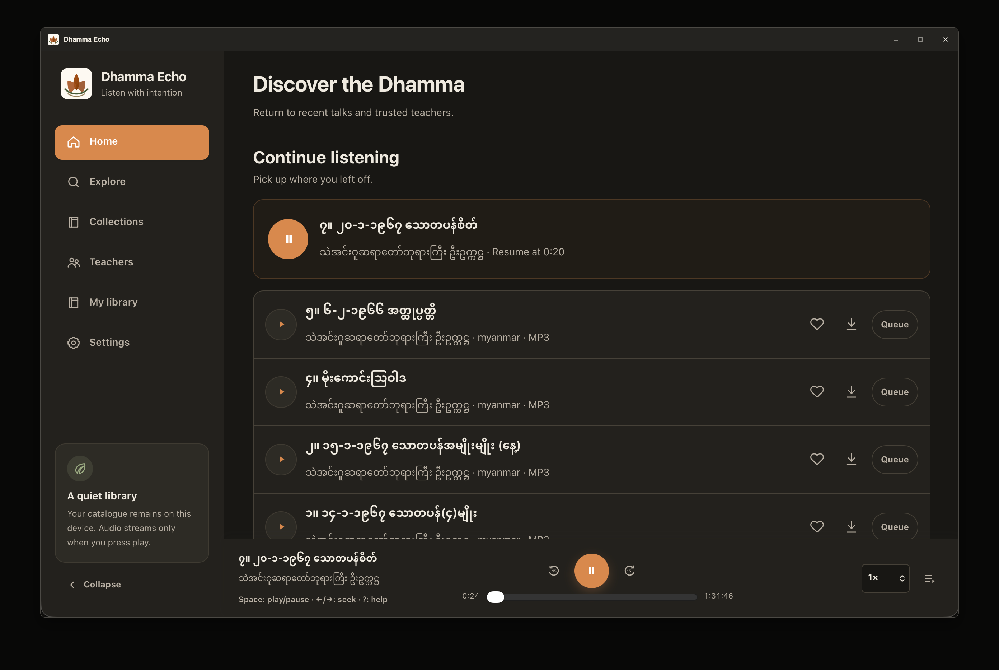
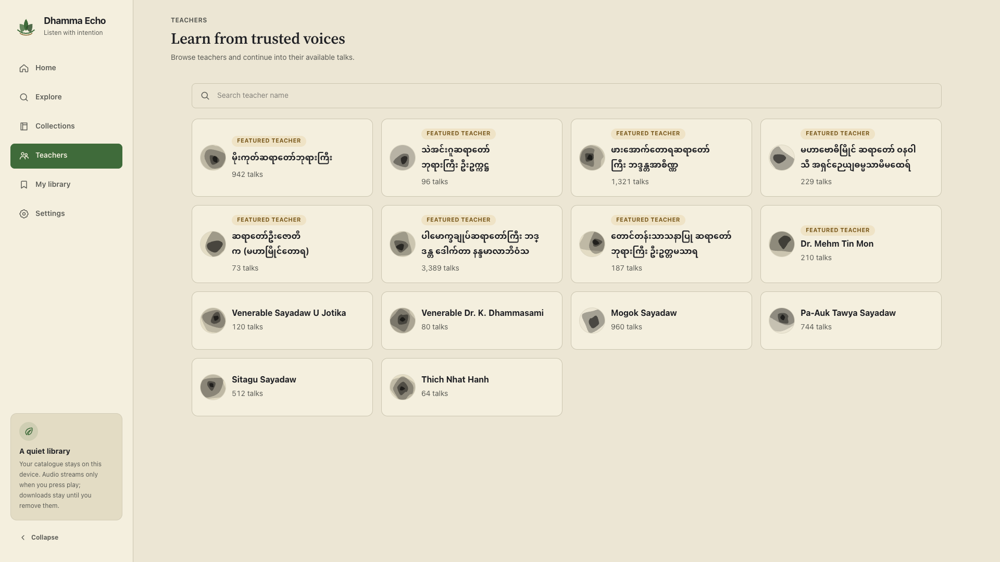
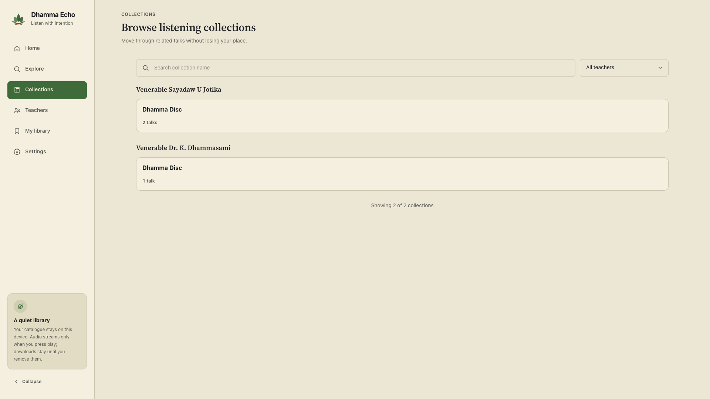
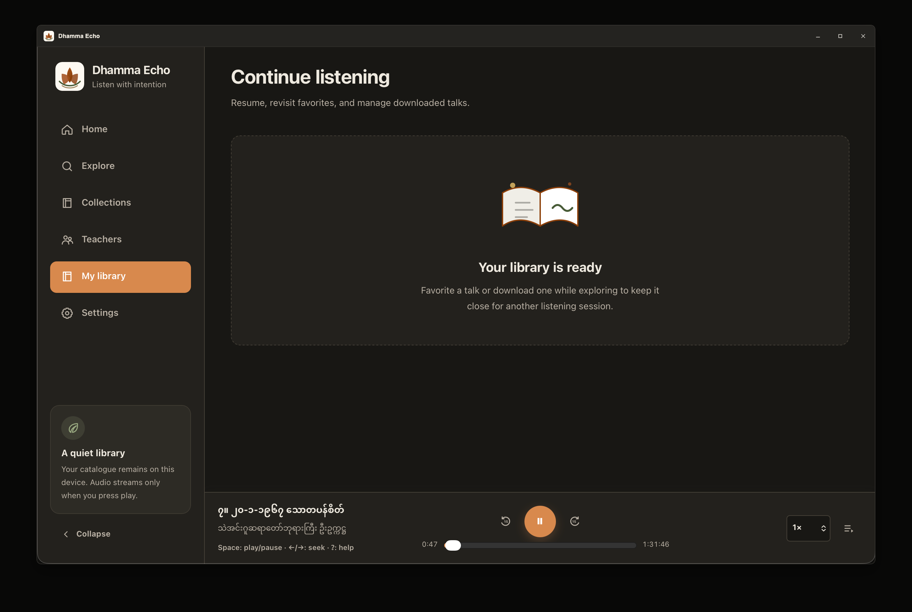
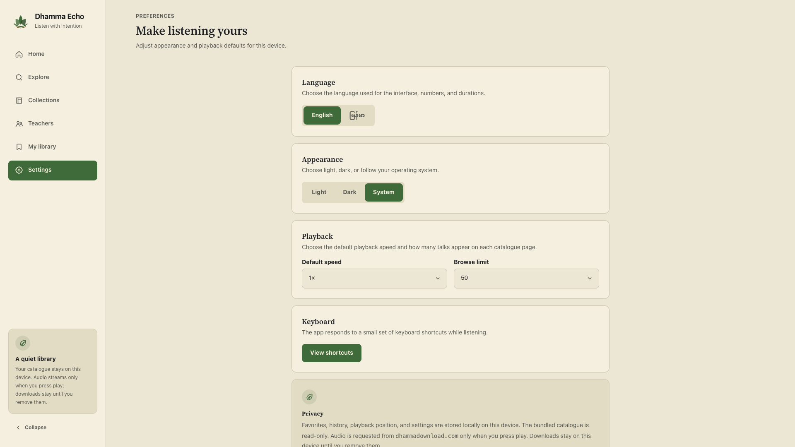

Dhamma Echo · Desktop · Open source
Dhamma, without the noise.
A private desktop library for finding Dhamma teachings, playing compatible audio and video, and returning exactly where you left off.
brew install --cask AungMyoKyaw/homebrew-tap/dhamma-echo

- 30,563
- audio talks
- 14,474
- video records
- 257
- teachers
- 429
- audio collections
One library. Start wherever you are.
Search by title, browse by teacher or collection, or return to a recent talk. The catalogue stays the same whichever path you take.

Search 45,000+ catalogued audio and video records without turning listening into a feed.
Find the teaching first.
Filter by content category, teacher, collection, language, and source format. MP3 and MP4 records can play in the app; legacy WMA and WMV records remain discoverable so the catalogue stays complete.
- Title and teacher search
- Audio and video categories
- Collection and teacher filters
- Queue, seek, speed, and resume position
Teachers and collections stay visible as a library, not flattened into search results.
Browse by context.
Follow the shape of the source catalogue when you already know the teacher or series you want. Featured teachers, complete collection names, and progressive loading keep large result sets usable.




Your library remembers the useful things and nothing more.
Leave. Come back. Continue.
Favorites, history, queue state, playback settings, and resume positions stay local. Audio and video share the same personal library model, so the app can resume the media you were actually using without an account or cloud profile.
Private because the architecture is small.
Your personal listening state stays on your device. There are no accounts, analytics, ads, or telemetry.
- Read-only catalogue
- A bundled read-only SQLite database is queried with parameterized Rust code.
- Narrow desktop boundary
- The webview can call only ten purpose-built desktop commands through Tauri 2: nine catalogue operations and one constrained MP3 download path.
- Source-hosted media
- Dhamma Echo catalogs Dhamma Download records and streams compatible media from the approved source hosts over HTTPS.
The media is not hosted by this project.
Catalogue source
Dhamma Echo is a desktop catalogue and player. It indexes records sourced from Dhamma Download and requests compatible audio or video from the approved source hosts when you choose to play it.
The application, its catalogue tooling, and its user interface are open source. Media ownership and availability remain with the original source.
Install the library. Keep the rest local.
Dhamma Echo is MIT-licensed and available for macOS, Windows, and Linux through GitHub Releases. On macOS, Homebrew is the fastest path.
brew install --cask AungMyoKyaw/homebrew-tap/dhamma-echo